曲線
- アンカーポイントに力を加えて曲げた状態
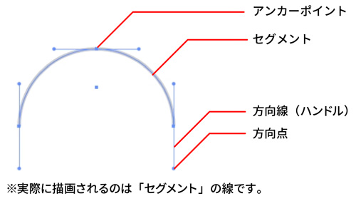
曲線を描く
ペンツールで曲線を描く
- プレス＋ドラッグ
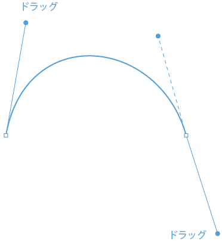
プレス＋ドラッグの意味
- Illustratorは、直線でつなぐプログラム
- 曲線を描くという作業は、線を描くというより直線を曲げるイメージ
- その曲げる作業が「プレス＋ドラッグ」です
直線を曲げる
- 直線を曲げるためには、アンカーポイントに力を加える
- 「力」は「ベクトル」と呼ばれ「大きさ」と「方向」の情報をもっています
力の決め方
- 曲線に対する「接線」を書くような角度と方向で決める
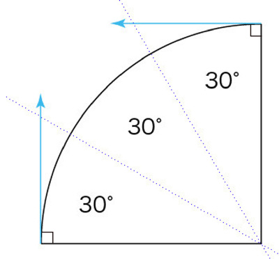
- 方向線はベクトル
- ベクトルには、力の大きさと方向がある
- 方向は円の１点に接する接線
- 大きさは４分の１の円を描く程度の大きさ
このように接線をつないでいくと考えると、どんな曲線も画けるようになります。
描画途中の選択解除の方法
- returnキーを押す
- Ctrl＋shift＋Aを押す
- Ctrl＋余白をクリックする
直線と曲線を連続して描く
直線からスムーズにつながる曲線を描く
- 最初の点をクリックして、次の点をクリックする
- ２点目から曲線のだしたいほうへ、マウスを押しながらドラッグする。そのとき直線の向かう方向にマウスを押しながらドラッグする
- ３点目の位置を、マウスを押しながら曲線の流れる方向にドラッグする
- 最後に［Ctrl］＋クリックして描き終わる
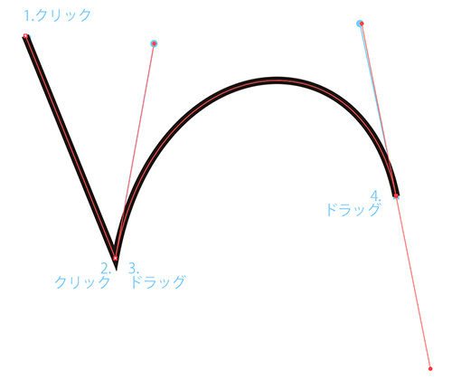
曲線からコーナーそして続く直線を描く
- 最初の点をマウスを押しながらドラッグする
- ２点目から曲線のだしたいほうへ、マウスを押しながらドラッグする
- ２点目のアンカーポイントをクリックする
- ３点目の位置を、［Shift］＋クリックする
- 最後に［Ctrl］＋クリックして描き終わる
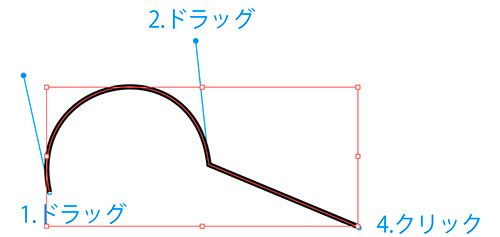
曲線からコーナーそして続く曲線を描く
- 最初の点をマウスを押しながらドラッグする
- ２点目から曲線のだしたいほうへ、マウスを押しながらドラッグする
- ２点目のアンカーポイントを［Alt（option）］を押しながら曲線のだしたいほうへ、マウスを押しながらドラッグする
- 曲線の向かう方向に３点目の位置を、マウスを押しながらドラッグする
- 最後に［Ctrl］＋クリックして描き終わる
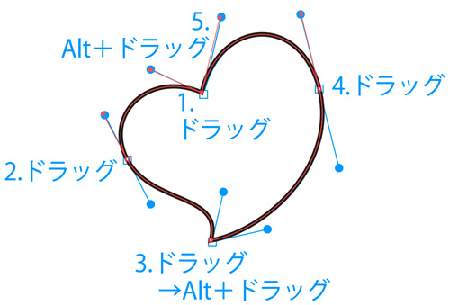
演習
曲線だけのオープンパスを描く
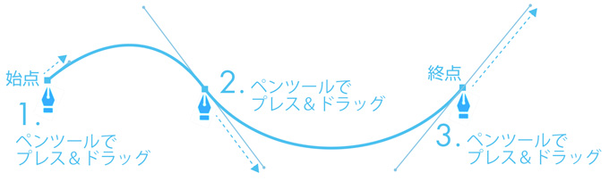
曲線だけのクローズパスを描く
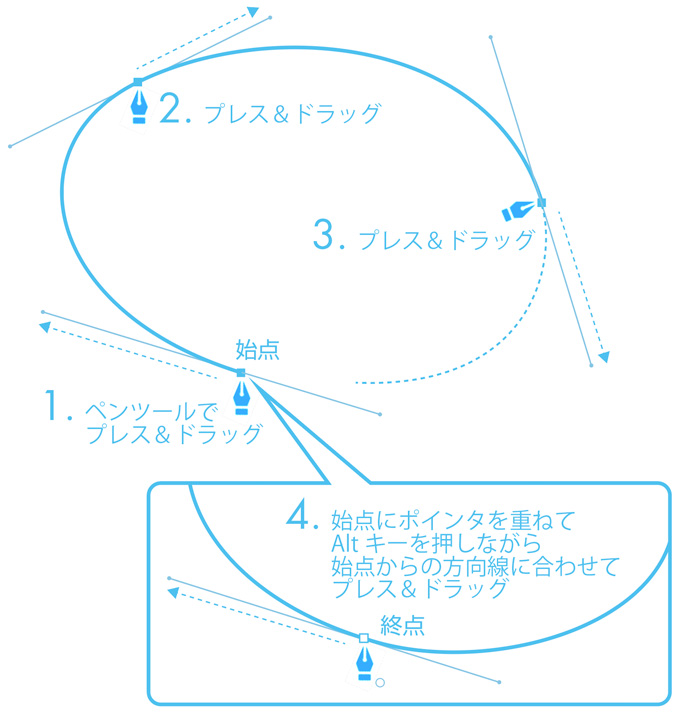
曲線から直線を描く（コーナー）
- ドラッグしてできた「ベクトル（力の大きさ・力の方向）」を、クリックして削除
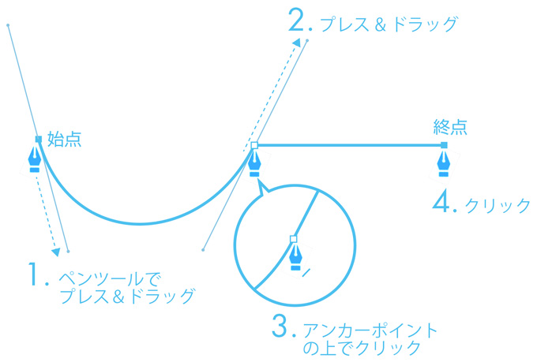
直線から曲線を描く（コーナー）
- 直線のアンカーポイントからドラッグして新たな「ベクトル（力の大きさ・力の方向）」を発生させる
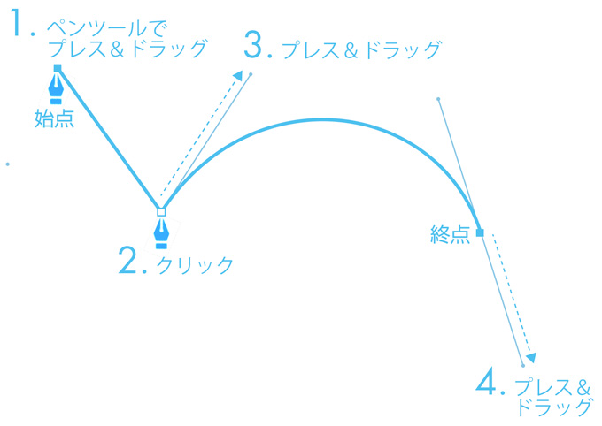
コーナーを描く
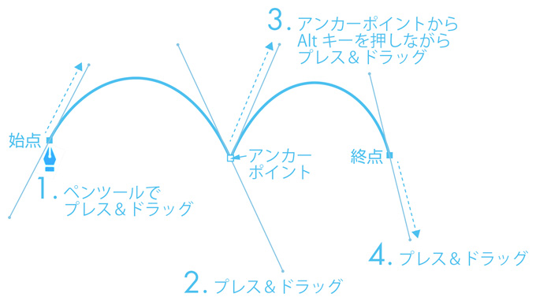
スムーズポイントで閉じる
- パスを閉じるときに、始点の方向線の角度を再設定します
- 終点で [Alt] キーを押しながら始点の方向線と同じ方向にドラッグします
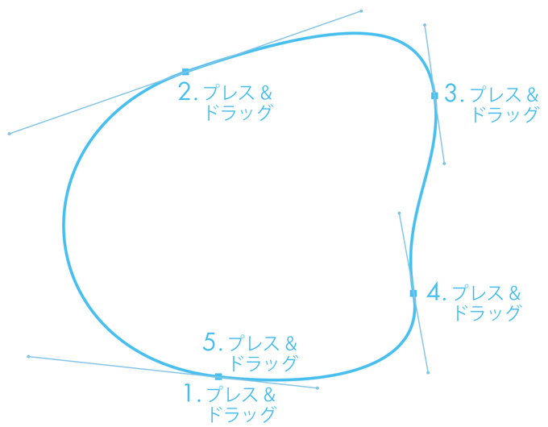
下絵をトレース（曲線の場合）
- 以下の４個所は、「Alt」キーを使って、方向を変える

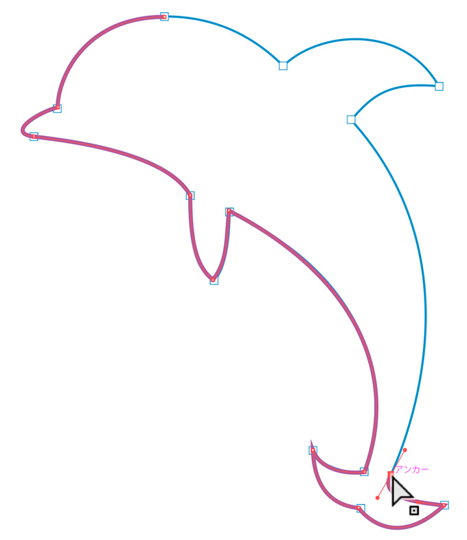 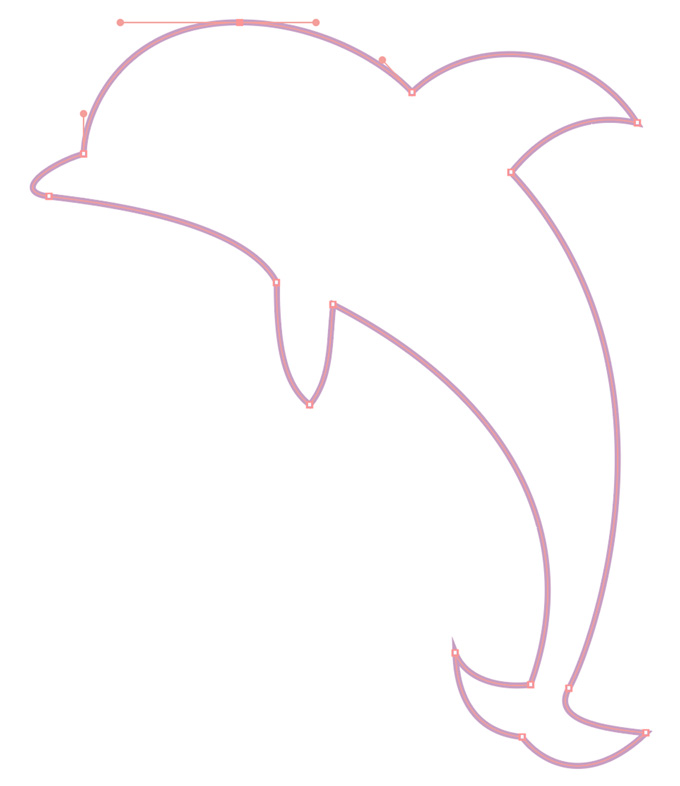